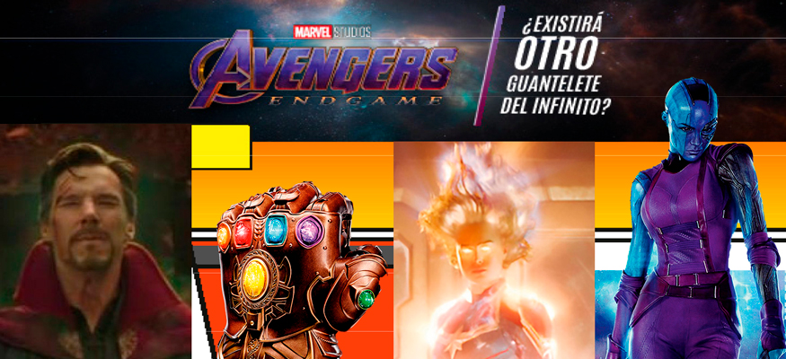

Estrenos del mes
Por: Jerrika Lozano
Para esta temporada nada mejor que ir a cine y ver los últimos estrenos de la cartelera, con el excelente servicio y la comodidad de los Multicines de Royal Films. ¡El mejor plan para toda la familia; disfrutar de las mejores películas y al mejor precio!
¡LLEVAMOS LA EXPERIENCIA DEL CINE A OTRO NIVEL!
En Royal Films contamos con las novedosas salas 4DX, una de las tecnologías más avanzadas que ofrece una experiencia cinematográfica totalmente envolvente.
La nueva sala 4DX excede la tercera dimensión, además de una proyección y sonido de alta calidad, la sala cuenta con efectos multisensoriales, sillas con movimiento, efectos ambientales como el viento, burbujas, y aroma, trabajan en perfecta sincronía con la acción en la pantalla.
Cada silla está equipada con simuladores programados para realizar movimientos básicos y poder crear un sin fin de combinaciones posibles para imitar acciones tales como volar y conducir.
Además de los movimientos, la sala está equipada con efectos ambientales para mejorar aún más la experiencia. A partir de un juego de luces para simular una tormenta, ventiladores para recrear brisas suaves, rociadores para generar sensación de humedad y esencia de olor real.

Estas son las posibles teorías de lo que ocurrirá en Avengers: End Game
Avengers es el tema principal de esta edición ya que, el 26 de Abril todos los fanáticos del Universo cinematográfico de Marvel podrán conocer de una vez por todas lo que ocurrirá con los seres eliminados por Thanos. Si recordamos lo ocurrido en la última entrega de Avengers, el guante original quedó extremadamente dañado luego de realizar la petición de Thanos, a partir de esto se han creado alrededor de esta historia infinidad de teorías, hoy ustedes conocerán aquellas teorías que tienen más fuerza.
1. LA PREMONICIÓN DE DOCTOR STRANGE
“Era la única forma…”, esto fue lo último que dijo Dr. Strange antes de desaparecer. Este personaje tuvo tiempo para revisar más de 14 millones de futuros alternativos para intentar vencer a Thanos, dentro de esos futuros solo existió uno donde los Vengadores salían triunfadores. Algunos fans creen que Doctor Strange tendría un as bajo la manga al dejar que Thanos consiguiera todas las Gemas del Infinito. ¿Qué fue lo que descubrió?
2. UN SEGUNDO GUANTELETE DEL INFINITO:
Steve Rogers o Tony Stark podrían utilizar el poder del guantelete del Infinito para revertir el chasquido. Esto podría suceder con otro guante. Así le quitarían las Gemas del Infinito a Thanos y después lo derrotarían en batalla. Recordemos que el original quedó dañado luego de aquel chasquido, por lo que no sería descabellada la idea de un segundo.
3. CAPITANA MARVEL DERROTANDO A THANOS
Los directores de la cinta han afirmado que Capitana Marvel es el personaje más poderoso dentro de este universo de Marvel, por lo que muchos creen que ella sería la clave principal para derrotar a Thanos; algunos creen que Capitana, se unirá con los héroes restantes y juntos lograrán luchar contra él, mientras que otros piensan que ella sería quien liberaría a los Vengadores atrapados dentro de la Gema del Alma y de ahí todos juntos se unirían para vencer a Thanos.
4. NEBULA LE ROBA EL GUANTELETE DEL INFINITO A THANOS
En los cómics, Nebula le roba el guantelete a Thanos en un descuido tomando así el control de las gemas y prometiendo venganza a su supuesto padre adoptivo que la torturó todo este tiempo. Es probable que esto vuelva a ocurrir en Avengers 4, aunque también podría ocurrir que los héroes hagan todo lo posible para obtener el control del Guantelete antes que Thanos vuelva a poseerlo.
Sin importar la teoría se sabe que Avengers End Game romperá récords en taquilla y al ser el final de la Fase 3 del Universo Cinematográfico de Marvel romperá también uno que otro corazón.

El gran terremoto
The quake / 28 de marzo
En el año 1904 un terremoto de magnitud 5.4 en la escala de Richter sacudió a Oslo con epicentro en la Fosa de Oslo que corre debajo de la capital noruega. En el presente, científicos comienzan a detectar señales que indican que un nuevo terremoto está en camino.
Shazam
4 de abril
Todos llevamos un superhéroe dentro, solo se necesita un poco de magia para sacarlo a la luz. Cuando Billy Batson (Angel), un niño de 14 años que ha crecido en las calles, grita la palabra ‘!Shazam’ se convierte en el Superhéroe adulto (Levi), por cortesía de un antiguo mago. Dentro de un cuerpo musculoso y divino, Shazam esconde un corazón de niño. Pero lo mejor es que en esta versión de adulto consigue realizar todo lo que le gustaría hacer a cualquier adolescente con superpoderes: ¡Divertirse con ellos! ¿Volar? ¿Tener visión de rayos X? ¿Disparar un rayo con las manos? ¿Saltarse el examen de sociales? Shazam va a poner a prueba los límites de sus habilidades con la inconsciencia propia de un niño.
Cementerio Maldito
Pet sematary / 4 de abril
Basada en la novela de terror de Stephen King, Cementerio Maldito sigue al Dr. Louis Creed (Jason Clarke), quien luego de mudarse con su esposa Rachel (Amy Seimetz) y sus dos hijos pequeños de Boston a Maine rural, descubre un misterioso cementerio escondido en lo profundo del bosque, cerca de su nuevo hogar, cuando ocurre una tragedia. Louis recurre a su inusual vecino, Jud Crandall (John Lithgow), provocando una peligrosa reacción que desencadena un mal profundo y con horribles consecuencias.
La maldición de la llorona
The curse of la llorona / 11 de abril
La Llorona es una aparición tenebrosa atrapada entre el cielo y el infierno, con un destino terrible sellado por su propia mano. La mera mención de su nombre ha causado terror en todo el mundo durante generaciones. En vida, ahogó a sus hijos en una rabia de celos, arrojándose en el río tras ver como mató a sus hijos violentamente. Ahora sus lágrimas son eternas. Son letales, y aquellos que escuchan su llamada de muerte en la noche están condenados. La Llorona se arrastra en las sombras y ataca a los niños, desesperada por reemplazar a los suyos. A medida que los siglos han pasado, su deseo se ha vuelto más voraz y sus métodos más terroríficos. En la década de 1970 en Los Ángeles, La Llorona acecha la noche y los niños.

Parqué Mágico
Wonder park / 11 de abril
June, es una niña muy optimista e imaginativa, que descubre un increíble parque de diversiones llamado Wonderland escondido en el bosque. El parque está lleno de atracciones fantásticas y de animales graciosos que hablan. Pero el único problema es que el parque está en caos. June pronto descubre que el parque proviene de su imaginación y que es la única que lo podrá salvar, así que se une con los animales para salvar a este mágico lugar y devolver la magia a Wonderland.
Hellboy
11 de abril
Atrapado entre los mundos de lo sobrenatural y lo humano, el apodado como ‘El más grande Investigador de lo Paranormal del Mundo’ junto con la Agencia para la Investigación y Defensa Paranormal (A.I.D.P.) tendrá un nuevo y peligroso desafío. Su misión será enfrentarse a una nueva y poderosa amenaza: Nimue (Milla Jovovich), conocida como La Reina de la Sangre, un espíritu ancestral de la época del rey Arturo que ha vuelto a nuestro mundo llena de sed de venganza para sembrar el terror y destruir a la raza humana.